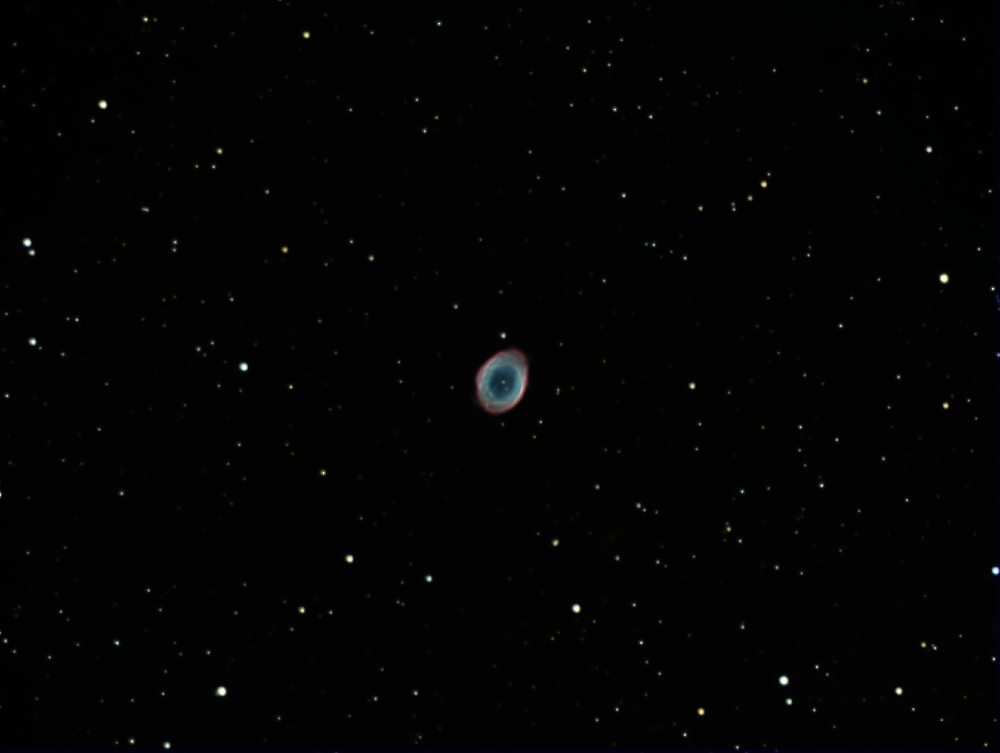

CPOD: 3 June 2017 - M57
| NGC 6720 (J2000 epoch) | |
|---|---|
| Type | Planetary Nebula |
| Const | Lyra |
| RA | 18h 53m 35.079s |
| Dec | +33° 01′ 45.03″ |
| Dist |
700 pc |
| mag(V) | -0.2 |
| Dim(arcsec) | 230" × 230" |
| *** Seasonal Observability of M57 *** | |||||||
|---|---|---|---|---|---|---|---|
| RA & dec:,18 53 35.0, +33 01 43, epoch 2000.0 Site long&lat:,+5 07 56.8 (h.m.s) West, +39 38 50 North. |
|||||||
| Evening | Midnight | Morning | |||||
| 2017 | moon | ha | secz | ha | secz | ha | secz |
| Jun 8 | F | -4 17 | 1.6 | -1 44 | 1.1 | +0 49 | 1.0 |
| Jun 23 | N | -3 11 | 1.3 | -0 42 | 1.0 | +1 48 | 1.1 |
| Jul 8 | F | -2 17 | 1.1 | +0 20 | 1.0 | +2 58 | 1.2 |
| Jul 22 | N | -1 36 | 1.1 | +1 17 | 1.0 | +4 10 | 1.5 |
| Aug 7 | F | -0 57 | 1.0 | +2 19 | 1.1 | +5 36 | 2.4 |
| Aug 21 | N | -0 27 | 1.0 | +3 11 | 1.3 | +6 50 | 4.8 |
| Sep 5 | F | +0 05 | 1.0 | +4 06 | 1.5 | +8 08 | v.low |
| Sep 19 | N | +0 34 | 1.0 | +4 56 | 1.9 | +9 19 | down |
| Oct 5 | F | +1 10 | 1.0 | +5 54 | 2.7 | +10 39 | down |
| Oct 19 | N | +1 45 | 1.1 | +6 46 | 4.6 | +11 48 | down |